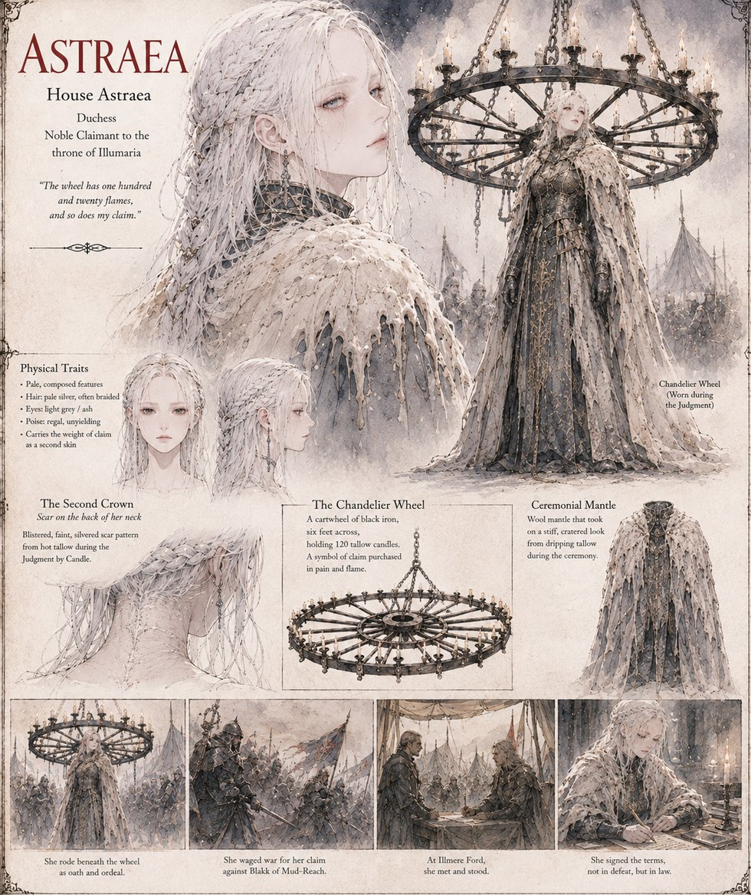

Astraea
Duchess, House Astraea · later Queen of Illumaria
Duchess of House Astraea, and the second claimant to stand the Great Judgment's trial: a six-foot Chandelier Wheel of a hundred and twenty tallow candles, strapped above her shoulders, that leaves the back of her neck blistered in a pattern she calls, to exactly one person, a second crown worn beneath the first. She musters her border levies less for the grazing land her council cites than because she can no longer bear being pitied, and her cavalry meets Ignis's own raiding column at the Standing at Illmere Ford on her marshal Coel's counsel, not her own conviction — a mistake her body-servant Prisca hears her admit, alone, the same night: he offered, and I refused.
She spends a month testing Blakk's goodness for a catch it never turns out to have, then two more years proving in public, through unglamorous service on his border commission, that her change of heart isn't a fresh maneuver for the throne. She marries him the following spring, becomes the sharper half of what the court quietly calls the Evening Ledger, and throws herself between him and Canon Voss's blade at Sarn's Crossing, taking a wound that troubles her for the rest of her life. She dies in the reign's thirty-sixth year, having underlined one line in her own private ledger more times than she ever admitted.
“He offered. I refused.”
Appears in The Vessel of Unmediated Grace